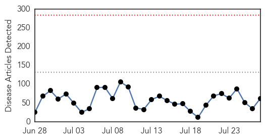

30 Day Trends
Web: 0 alerts, 0 warnings
Twitter: 0 alerts, 0 warnings
Top Articles:
- 0.997
- (LEAD) S. Korea removes last suspected MERS case from isolation
- 0.996
- Suspected MERS Outbreak Reported in the UK
- 0.995
- MERS outbreak virtually ends
- 0.991
- The Chosun Ilbo (English Edition): Daily News from Korea
- 0.989
- Japanese Encephalitis outbreak in India’s Assam State kills 66
- 0.987
- The World On Arirang
- 0.983
- Q fever numbers 'not unusual'
- 0.981
- All MERS suspects in S. Korea freed from quarantine - Xinhua
- 0.953
- More cases of leprosy are being reported in Florida
- 0.951
- South Korea's last suspected MERS case removed from isolation
- 0.944
- Children's Hospital Colorado watches for recurrence of enterovirus outbreak
- 0.943
- TB Infections Worrying Zimbabwe Health Experts
- 0.935
- KBS World Radio
- 0.929
- ‘JE spreading wings for diagnosis delay’
- 0.917
- Chicago Tribune
- 0.917
- Chicago Tribune
- 0.917
- Chicago Tribune
- 0.917
- Chicago Tribune
- 0.917
- Chicago Tribune
- 0.917
- Chicago Tribune
- 0.917
- Chicago Tribune
- 0.917
- Chicago Tribune
- 0.917
- Chicago Tribune
- 0.916
- Treatment failure in parasite infection tied to virus
- 0.910
- What's Causing Florida's Leprosy Cases?
- 0.889
- Treatment Failure in Parasite Infection Tied to Virus
- 0.874
- What is MERS? Middle East Respiratory Syndrome information as Manchester records case
- 0.864
- Deadly kiss? Bug could spread deadly disease to the Lowcountry
- 0.841
- KBS World Radio
- 0.814
- Rabbit fever (tularemia) found in four N.D. counties
- 0.781
- BUSINESS BEAT: Branch-Hillsdale-St.Joseph Community Health Agency recognized for emergency preparedness planning
- 0.755
- EU approves first malaria vaccine, National, Phnom Penh Post
- 0.748
- Floodwater can pose health risks
- 0.747
- The World’s First Malaria Vaccine Is Almost Here, and Will Be Entirely Not-For-Profit
- 0.744
- Department of Health - Enumclaw Courier-Herald
- 0.734
- More signs of growing unmet health need
- 0.715
- Texas A&M entities helping understand, monitor Chagas disease
- 0.677
- Stay out of flood waters
- 0.663
- Study: Lyme disease growing in high risk areas
- 0.653
- Queensland authorities continue to monitor property at centre of Hendra outbreak
- 0.649
- Sorry, deze pagina kon niet gevonden worden.
- 0.638
- World's first Malaria vaccine
- 0.627
- Polio: Nigeria Not Polio Free Until WHO Says So
- 0.624
- More signs of growing unmet health need - ASMS
- 0.622
- Santa Fe County woman died of plague, health department is treating those in contact with her
- 0.610
- Our citizens must come first - Letters
- 0.609
- Will European HPV Vaccine Investigation Reveal the Truth?
- 0.604
- Stillbirths Outnumber Infant Deaths In The United States For The First Time
- 0.603
- Bat urine could be cause for Hendra virus spreading to Atherton Tableland near Cairns
- 0.587
- Healthcare Big Data Analytics Helps Minn. Find $2B in Savings
Showing top 50 articles...
Top Tweets:
-
No tweets found for Jul 27, 2015
Web/News Articles
Tweets

Article Locations